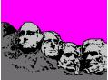
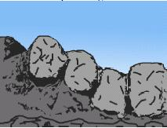
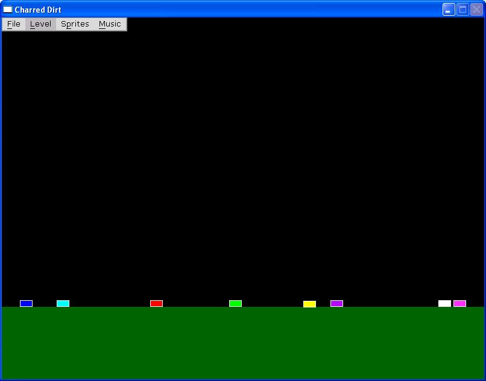
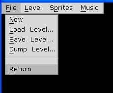
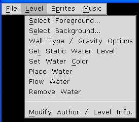
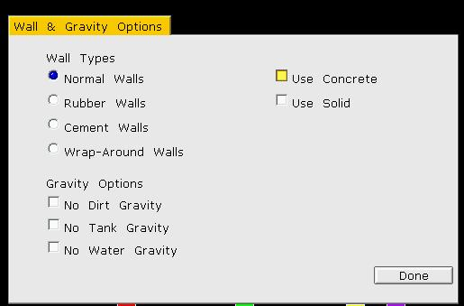
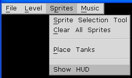
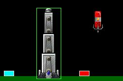
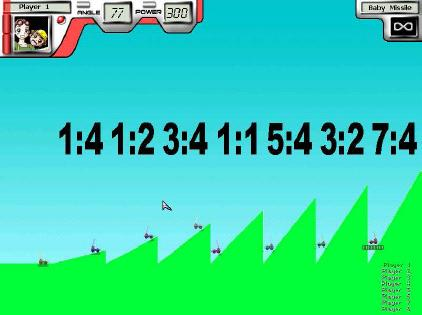
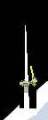

Charred Dirt Map Editor Helper
Original Author: Crazy_Wombat
Version 1.0 extensions by Degauss
Crazy_Wombat wrote this after challenges with learning to use the version 0.99c CharredDirt editor.
It is hoped that it helps anyone else who is new to CD map making to avoid troubles.
Table of contents.
Charred Dirt from version v.99c on has a built in level editor. The makers of the game included levels in the game which should be sufficient for most gamers, but if someone felt that it needed more, then they could make their own.
In order to design a level for CD you need the following things:
To access the built in level editor in CD, open CD, and at the main screen press and hold ALT. In the place of multiplayer, a new option, EDITOR, will appear. Click on it to open the editor. However, most of your level editing will happen before you ever go to the level editor.
Without a doubt, the biggest trouble is figuring out how to make the foreground right. CD uses two BMP’s for every level. The foreground is the front level, and represents all of the dirt in the level. This dirt is where the tanks rest, has its own gravity settings, and is destroyable in the game. The foreground affects all of the strategy for a level. For example, if there is a large level area in your map, direct fire (i.e. Railgun, etc.) weapons will earn the most kills, where as if there is a large mountain, weapons with a ballistic trajectory (i.e. nukes, etc) will be more in order.
Maps with water play different also. While water isn’t added to the BMP, you do need to plan on it location while setting up the foreground bitmap. Water rolls downhill, unless water gravity is turned off, so it collects in any low points you setup for it. On any map, the foreground has empty space above, so projectiles can fly, and the background can be seen behind it. To make an area of the foreground transparent it needs to be pure pink (225,000,225; or FF00FF) That's colour 8 on the bottom row of the paint palette.
Example Foreground: 
The background is the picture behind the foreground. It has little effect on game play, but makes for a more enjoyable level. If no contrasting colors are used, it is difficult to tell the difference between the foreground and background. This can make the level less fun for some, but more challenging for others.
As the foreground is shot away, more of the background is exposed, so keep that in mind.
Example
Background:

Once you have your foreground and background set up, you need to turn them into a level.
When
you first open the editor, it looks like this:
the
black is the default, nonexistent background. The dark green is the
default foreground. The littlemulticolor
rectangles are the spawn points for the tanks. Click on the level
dropdown menu to find themenu
items to set the foreground and background picture. You can also find
the menu item to set the levelgravity
and wall type. The sprites menu lets you add and remove different
sprites.
File Menu

New, Load & Save do the expected things. Dump Level creates a text file of the level together with copies of the foreground and background BMP's.
Level Menu

Select allows for the foreground & background to be inserted into the level. When you add your foreground, you will notice that everywhere that waspure pink is transparent now, and you can see the background through it.
Wall / Gravity Options can be set here.
The round buttons allow one only & any of the square button can be selected.The gravity option when selected stop dirt, tanks & water from falling.The use Concrete & Solid need a bit more of an explanation.
To hold dirt up in the air requires concrete. Concrete is a special pixel colour that does not fall with the rest of the dirt. This colour was originally a preset colour similar to the transparent colour but version 1.0 changed it to dynamic, i.e. different for each level so it can be blended in. When the 'Use Concrete' is selected then the top-left pixel in the foreground BMP is used. This allows the level designer to set their own colour. If it is not set then a dark unused colour is internally found. This is to allow weapons like the tunnel laser to function.
Solid is similar to concrete except that it uses the top-left pixel from the background BMP and is set to transparent if not selected. Any pixels of this colour found in the background are copied to the foreground and are indestructible. They are not destroyed by any weapon and remain an obstruction for the entire time the level is being played. The coding for solid is not complete yet so its operation may change or it may be deleted completely .

Set Static Water Level place a slab of water on the screen.Static water does not move and is the width of the screen. Move the pointer to the required height and click the right mouse button.
Water Colour is set by moving the mouse pointer over the required colour on the screen and pressing c
Place water creates 100 drops of dynamic water at the pointer position when w is pressed and the left mouse button clicked. The water falls to the top of the dirt. If the foreground is changed after placing water then it will remain in its position i.e. inside dirt or in mid air.
Placed water does not flow down into the low places so press f to flow the water for a few pixels. Repeated pressing of f may be required to get all dynamic water into a stable state.
Dynamic water is destroyed when it contacts static water.
To remove water press the backspace key. WARNING: this deletes ALL water.
Author / Info dialog gives information for map selection.
Sprites Menu

Sprite selection shows a list of objects that can be inserted into a level. Any number of the same sprite can be added to a level but as most sprites are active they will consume cpu time and may slow the game. Some sprites can be placed anywhere on the screen and others will remain on the dirt surface.

As can be seen the tower
pod is on the surface and the fuel cylinder is in the air. The other rectangles
are tank placement locations. There must be 8 tank locations where tanks are
placed at random at the start of a level. These positions can be moved via the
'Place Tanks' menu item.
Select and move one location to its required position then right
click to lock it in place.
The show HUD menu item displays the heads up display visible during the game. This allows the level designer to see if anything will be covered up by the HUD. If the HUD is visible then the menu will allow it to be hidden.
Music Menu
The music menu allows selection of background music. Only the file name is saved with the level so the music file must be available at run time. Music is optional and will not cause errors/problems if it is not specified or is not present at run time.
You cannot see the log when in editor mode.
Some dialogs stop the screenshot system from functioning.
Out of personal curiosity, I set up this map to help me to know what angled slopes tanks would slide down.

all of the tanks started at the top(right) side of their own hill.
As you can see, any angle steeper than 45 degrees (1:1) will cause the tanks to slide.
A way around this is to add a few pixels from the background to form a small ledge for the tank to sit on. If the area is hit then the extra pixels are destroyed and the tank slides (or dies) and no one knows any different.
Try not to make spikes less than tank width as the tank can straddle it. The bottom-left & bottom-right pixels of a tank are the only ones used to detect if the tank is sitting on dirt.

====================//====================